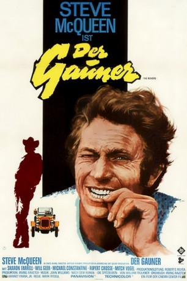
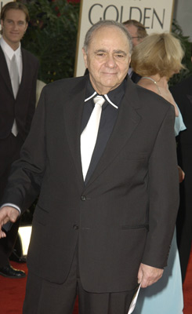
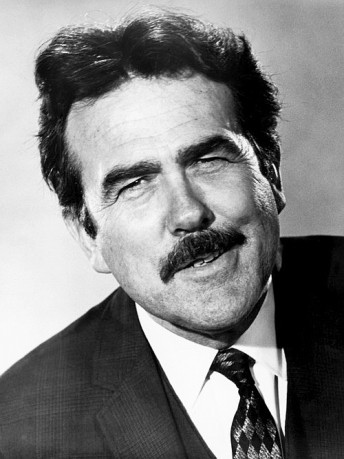

#8042 Der Gauner
Alternativ: The Reivers
Auszeichnungen: für 2 Oscars nominiert
 
 IMDB-Wertung: 6.8 / 10
IMDB-Wertung: 6.8 / 10  Metascore: 0
Metascore: 0 
Mississippi, in den frühen Anfang des 20. Jahrhunderts: Hier spielt diese nostalgische, auf dem erfolgreichen Roman von William Faulkner basierende Abenteuerkomödie. Steve McQueen ist Boon, ein Hilfsarbeiter und Gelegenheitsgauner, der sich das neue Automobil seines Arbeitgebers “borgt”. Mit dem legendären Winton Flyer macht Boon sich auf den Weg nach Memphis. Begleitet wird er von Ned, dem farbigen Stallburschen, und Lucius, einem altklugen Zwölfjährigen, der seine Unschuld verlieren möchte. Auf ihrer turbulenten Reise verschlägt es die drei Spitzbuben ins Bordell und zu einem berühmten Pferderennen. Bei diesem Rennen muß Lucius sein Pferd als Erstes durchs Ziel bringen – denn nur so können die Gauner das Auto zurückgewinnen, das Boon gegen das Rennpferd eingetauscht hat.
Jahr: 1969
Dauer: 111 Minuten
FSK: 12
Land: USA Studio: National General PicturesTonspuren:
Untertitel:
Auflösung: 1080p (1920x824) Größe: 7833 MB
Genre: Drama, Komödie
Regisseur: Mark Rydell
Drehbuch: William Faulkner
Soundtrack: John Williams
Darsteller:
 Steve McQueen als Boon Hogganbeck
Steve McQueen als Boon Hogganbeck- Sharon Farrell als Corrie
 Ruth White als Miss Reba
Ruth White als Miss Reba-  Michael Constantine als Mr. Binford
 Clifton James als Butch Lovemaiden
Clifton James als Butch Lovemaiden- Juano Hernandez als Uncle Possum
-  Lonny Chapman als Maury McCaslin
 Will Geer als Boss
Will Geer als Boss- Mitch Vogel als Lucius McCaslin
 Diane Ladd als Phoebe
Diane Ladd als Phoebe Ellen Geer als Sally
Ellen Geer als Sally Dub Taylor als Dr. B.F. Peabody
Dub Taylor als Dr. B.F. Peabody Allyn Ann McLerie als Alison
Allyn Ann McLerie als Alison Charles Tyner als Edmonds
Charles Tyner als Edmonds- Shug Fisher als Cousin Zack
- Logan Ramsey als Walter Clapp
 John McLiam als Van Tosch
John McLiam als Van Tosch Roy Barcroft als Ed (The Judge)
Roy Barcroft als Ed (The Judge) Billy Green Bush als Patron
Billy Green Bush als Patron Burgess Meredith als Lucius / Narrator
Burgess Meredith als Lucius / Narrator Frank Baker als Townsman at Train Depot (uncredited)
Frank Baker als Townsman at Train Depot (uncredited) Max Wagner als Race Spectator (uncredited)
Max Wagner als Race Spectator (uncredited)- Rupert Crosse als Ned McCaslin
- Diane Shalet als Hannah
- Pat Randall als May Ellen
- Lindy Davis als Otis
- Raymond Guth als Uncle Ike
- Jon Shank als Joe Poleymus
- Gloria Calomee als Minnie
- Sara Taft als Sarah
- Vinnette Carroll als Aunt Callie
- Lou Frizzell als Doyle
- R.N. Bullard als Patron
- Ogden Talbot als Man with Derby
- Michael Hinn als Joe Dobbs
- Bert Conway als Billy Hebb
- John J. Fox als Heasley
- Owen Bush als Pete Hyde
- James Rawley als Paul Hart
- Al Hopson als Al Boyce
- Wes Fuller als Bobo
- Ella Mae Brown als Mrs. Possum
- Florence St. Peter als Mary Possum
- Jim Goodwin als W.J. Garver
- Beverlee McKinsey als Girl by the Boon's Car (uncredited)
- Robert Robinson als Race Spectator (uncredited)
Datei: X:\1969\Gauner, Der (1969, FSK12, 1920x824).mkv seit 19.01.2018
Festplatte: HD 1900-1970
 Es gibt insgesamt 22 Filme in der Gruppe '1969'
Es gibt insgesamt 22 Filme in der Gruppe '1969'